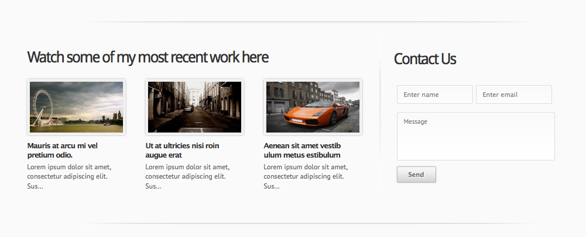

1. Preparation
Welcome to the installation guide of Archin - Premium Business Theme. First download a copy of WordPress (latest Version) and install it on your domain of choice, I’m not going to teach you how to install WordPress because there are plenty of guides on the net, just google for it.
Next on the list is preparing wordpress for Archin ;). After you've installed WordPress and everything is working as it should we need to go over some settings, just to make sure our wordpress theme is working without any problems
Wordpress automatically inserts a standard page and post, we need to remove those before we're moving on.
You will notice that our previews are different then yours, that's because we are working with a multi user set up for our demos. Don't let this distract you.
Next on the list are activating the threaded comments, go to 1. Setings -> Discussion and select 2. Enable threaded (nested) comment 5 levels deep.
Let’s move on with the Permalink setting, we all want some nice and clean links for our page, category, archives and posts titles. To achieve this just go to Settings –> Permalinks and select “Custom Structure” write /%postname%/ inside the input field, there’s one problem though, some hosts are handling these permalink settings differently, when the normal method does not work try to ad this index.php?/%postname%/ or else contact your host for help on this matter.
Then you need to download your copy of Archin - Premium Business Theme from your themeforest download page. And please don't forget to give our theme a fair rating, it's just one click for you and oh so important for us.
Next unzip the package. Inisde this package you will find a folder called WP. Inside this folder there's a zip file and a theme folder. Use the zip file to upload it through WordPress Install Theme's section. We do prefer the ftp method which is more controlable and stable, open up your ftp program and upload the theme folder. Do not upload the package from themeforest but first unzip it and look for the theme folder inside the WP folder.
2. Setting up the Homepage
Okay, finally we have arrived to the installation process of Archin, it's really easy and it should be up and running in no time. First locate the xml file inside the download package and import it. After this we need to set the homepage as a static page. Go to Settings -> Reading and follow the three steps shown inisde the image below.
Now we need to locate the home page inside the Pages Section. Open it up and on your right, just above the featured image box you will see a Page Attributes box, select Home Page Template from the dropdown and your done.
On the demo you will see three column just above the footer, to ad them you can copy/paste the content below or ad your own content if you wish. Your able to ad almost anything you like in there. everything added inside the home page is shown here.
[one_third] <h3>Visual Composer inside!</h3> <img class="alignright size-full wp-image-975" title="Visual Style Composer" src="http:// wptitans.com/archin/files/2011/03/color-palette.png" alt="Visual Style Composer" width="32" height="32" />We can offer you any style you need with our inbuilt visual style editor, no need to open up any css file anymore. Watch the video for more info.[/one_third] [one_third] <h3>Need unlimited Sidebars?</h3> <img class="alignright size-full wp-image-974" title="Sidebar Manager" src="http://wpt itans.com/archin/files/2011/03/settings.png" alt="Sidebar Manager" width="32" height="32" />Want a different sidebar for each page? That's no problem, with our inbuilt sidebar manager your able to create as many sidebars as you need.[/one_third] [one_third] <h3>Create your forms in style?</h3> <img class="alignright size-full wp-image-977" title="Form Manager" src="http://wpti tans.com/archin/files/2011/03/mail.png" alt="Form Manager" width="32" height="32" /> Never look for another contact form plugin ever again, we have the ultimate solution for you. Create almost any type of form with our inbuilt form manager. [/one_third]
Now we have finsihed the first section of the of the homepage content. Remember we work from bottom to top. Next we will set up recent work and contact from section. This section is called Home Page Content2 and it's handled by a widget section. Widgets in this area only allow up to 1 column per row.

Go to Appearance -> Widgets and you should notice a Home Page Content2 widget area, now drag the Feature Posts and Create Quick Contact Form widgets to this area and set it to the following settings. (In the Feature Posts widget your able to select Popular, recent, Featured or Portfolio items).
Next we will set up the last section of the homepage content. The Home Page Content area.

This content is widget ready as well. Go to Appearance -> Widgets and you should notice a Home Page Content widget area, now drag the Custom Box and Scrollable posts widgets to this area and set it to the following settings. (In the Scrollable Posts widget your able to select Popular, recent, Featured or Portfolio items).
Then inisde these custombox widget you can ad your own text, images, and button link. This should be it in regarding the content section of the homepage, other section are explained below. Couldn't understand or follow the text version then watch the two screencasts below
4. Theme Option Panel
We’re trying to improve our add-ons in both usability and styling's. That’s we’ve decided to keep on working on the theme’s option panel until we have the perfect panel build in for you’ll. In Archin we’ve made the panel even more usable then before and removed the clutter and improve performance.
It’s still unbranded so you don’t have to worry about one of your clients to see your using a third party developer. In the new panel there's a From Builder, a Font Manager, a Visual Composer and a Sidebar Manager built in.
Archin has even more things to play with then our previous released themes and we’re almost at a point that you won’t need anymore plug-ins.
Packed with a tons of features which will make your life so much easier, so don't hesitate and get your's today. Watch the scrrencast to get an idea of the functions and how they work.
5. Smart Sense
Ambience has a custom build URL Shortner with analytics options, this shortner tool comes with a few great options. After adding the Google API Key there's nothing more to do then release a new post and then open up your Smart Sense section.
When you've openend this section you will notice that the post you've just released is shown inisde this section. It shows post title, post link, Post shortened url, analytics and spread the word buttons from the most popular social media sites out there.
You will notice that our url shortner is disabled because our API Key isn't set, we didn't set this due the fact that we're running a test blog and there's no need for this function at this point. All you need to do is click on the icons and share your post to gain that much appreciated traffic for your hard work.
Please be aware that when you've send your post to twitter that the tags you've added are converted to hashtags, so don't ad to much tags or ad them afterwards.
6. Events Manager
Don't feel like installing a extra plugin to manage your events, no worries. Ambience comes fully packed with an events manager for you. The events can be added through it's own manager, to use this just look for the Event tab on your left and open up the manager
After adding clicking on Add New Event you will see your events info window. in this window you get set the time, date, info and place of the event you want to list.- 1. Add the title of your event
- 2. Add description of the event
- 3. Set your starting date and end date of your event
- 4. Set your starting time and end time of your event
- 5. Ad the address, city and country of where the event is taking place
Now you will see the event and it's details inside your calendar on the date it will start
7. Gallery Manager
Don't feel like using that rather hard to handle gallery feature that WordPress has build in there CMS, no worries. Ambience comes fully packed with an Gallery manager for you. The Gallery items can be added through it's own manager and can be divided in different columns so you can have a gallery with 2 columns, 3 columns and 4 columns. You even have a Flickr Gallery which pulls your images from Flickr by using your API.
After you've clicked on New Page you will see your Gallery Page window. in this window you r able to ad images, ad title, ad description, etc etc.- 1. Add the title of your Gallery, this will show above the gallery.
- 2. Select your gallery type, nomral or Flickr. To use Flickr you need to set up your Flickr API and username inside the option panel.
- 3. Click to add an new item.
- 4. Upload your image you want to show, make it minimal 1000x800 for full effect.
- 5. Add the link to where you want to link your image.
- 5. Give it a title.
- 7. Add description of the image.
- 8. Click on update to ad your gallery.
To show it inside your menu. All you have to do is open Appearance - Menus and look for the Gallery location on your left and drag the newly made page to the right.
8. Slider Manager
Archin has a cool Slider Manager from where you can insert your images, just upload them, give it a title and description and let it point anywhere you want. Want to change the order of the images, then there’s no need to delete and start over. The slider items can be dragged to the place you want them to show, how cool is that.
Okay, here's a brief screencast which will cover all steps to get your slider going.
9. Portfolios
Archin has 5 different portfolio options to chose from. 1 column, 2 columns, 3 columns, 4 columns and a wall portfolio layout. All portfolio items can be added through custom post options and or filterable and they have pagination inside. Pagination options and excerpt for each column can be changed inside the option panel, this means your able to select the amount of portfolio items you want to show separately for each column, also the excerpt length can be adjusted inside the option panel.
10. Short Codes
We've paid some extra attention to the shortcodes this time and from now it as easy as it can be to ad your shortcode. Inside the shortcode editor there's also a Button editor which can create almost any type of button you want or need. Watch the screencast to get an idea of how it works and how to ad them.
10. Font Manager
There's no need to to ask for help with adding custom font anymore, we have build a Font Manager for you'll. Ad fonts through this manager which will be added in to the already existing list of fonts. Works like a charm, only thing you need to pay attention to is the font sizes but we have thought about that as well. Font sizes can be changed also in the option panel. Watch the video to see how it works.
12. Form Builder
Compose your own forms from now on. Yes, you heard us right. We have a custom form composer build for you. Packed with drag and drop functionality, notification support, captcha, auto responder and much more. Available elements are Text fields, Text areas, Drop downs, Notification, Captcha and Auto respond.
To edit your messages you have to head up to the Message section where you can ad your own text for the Auto respond and Notification. Watch the video to see how it works.
14. Structure
- Cache – folder used by timthumb to resize images for slideshow. Note if the images are not showing please set this folder permission to 777
- All java script files are in js folder, with cufon files in js -> cufon-fonts folder .The fonts uploaded via font manager are uploaded in this folder.
- js – contains the js files which fuels the theme. The custom.js is the main js file in which all js code is written
- Sprites – image slices for the themes
- Stylesheets – css stylesheets for Archin
- hades_framework is our choice of framework for the themes./li>
15. Credits
Credits
- Farm Fresh Web Icons from FatCow
- iconSweets2 from Yummygum>/a>
- stock images from Stock.XCHNG
- Amazing textures from WebTreats
- Some design resources from 365psd and premiumpixels
- Recaptacha library
- jQuery plugins - popeye, prettyphoto, kwicks , nivo , jquery tools , uploadify and jQuery UI
- Kriesi Pagination code
Thank you so much for purchasing this theme. We’re be glad to help you if you have any questions relating to this theme. No guarantees, but we will do our best to assist. If you have a more general questions relating to the wordpress themes on ThemeForest, you might consider visiting the forums and asking your question in the “Item Discussion” section.